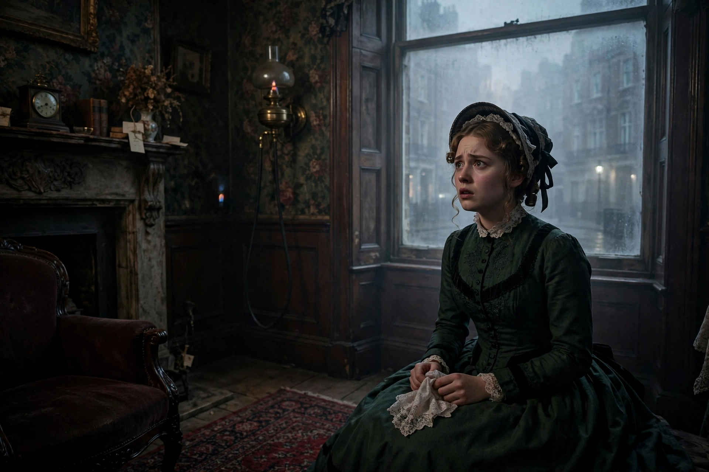

Gaslight is a 1944 American psychological thriller directed by George Cukor, adapted from Patrick Hamilton's 1938 play Gas Light. It stars Ingrid Bergman as a young wife whose husband, played by Charles Boyer, methodically manipulates her into doubting her own perceptions and sanity. Bergman won the Academy Award for Best Actress for her performance. The film's title gave rise to the term "gaslighting", now widely used for this form of psychological manipulation.
| Gaslight | |
|---|---|
| Directed by | George Cukor |
| Based on | Gas Light (1938 play) by Patrick Hamilton |
| Starring | Charles Boyer, Ingrid Bergman, Joseph Cotten |
| Release date | 1944 |
| Studio | Metro-Goldwyn-Mayer |
In Victorian London, Paula Alquist marries the charming Gregory Anton and moves into the house of her late aunt, the famous singer Alice Alquist, who was murdered years earlier in an unsolved case. Gregory — secretly the murderer, searching the attic for the aunt's jewels — undertakes to isolate Paula and convince her she is losing her mind: he hides objects and blames her forgetfulness, and dismisses the dimming of the gas lamps (caused by his own searches upstairs) as her imagination. A Scotland Yard detective, Brian Cameron, recognises Paula and reopens the case, reassuring her that the lights really did dim. Gregory is exposed and arrested; Paula, her confidence returning, confronts him in a famous closing scene.
MGM notoriously tried to suppress the earlier 1940 British film adaptation, even attempting to destroy its negative, so that Cukor's version would not face comparison. The film was nominated for seven Academy Awards and won two, for Bergman's performance and for art direction. Angela Lansbury made her screen debut as the maid Nancy, receiving an Oscar nomination at seventeen.
See also: Gaslighting · Ingrid Bergman